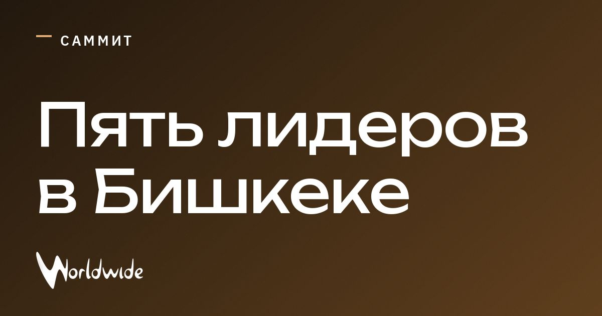

Пять лидеров соберутся на саммите ШОС на фоне войн и санкций

В Бишкек 31 августа прибудут Владимир Путин, Си Цзиньпин, Масуд Пезешкиан, Нарендра Моди и Шехбаз Шариф.
SCO отмечает 25-летие; в повестке — войны в Украине и Иране, а также напряжённость с западными странами. Участники заявляют, что представляют 40% населения мира и 25% мирового ВВП.
Путин отдельно проведёт переговоры с Си Цзиньпином и Пезешкианом. Саммит продлится два дня.
Источники: Asharq Al-Awsat, InfoMoney, Dawn Pakistan, France 24, Observador, Sada El Balad